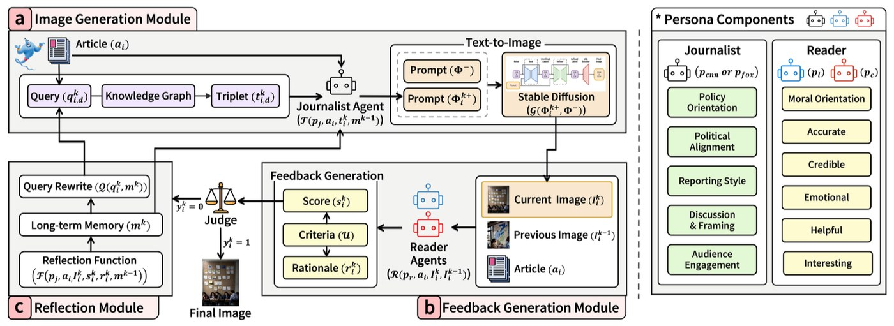
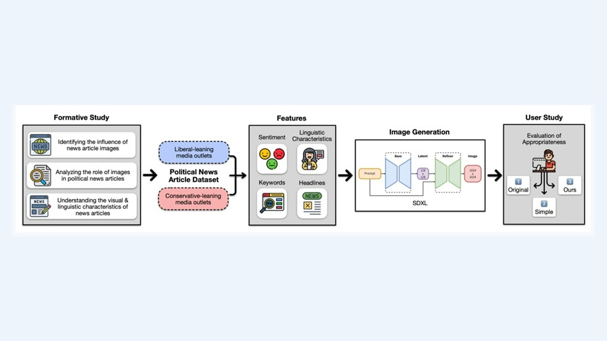
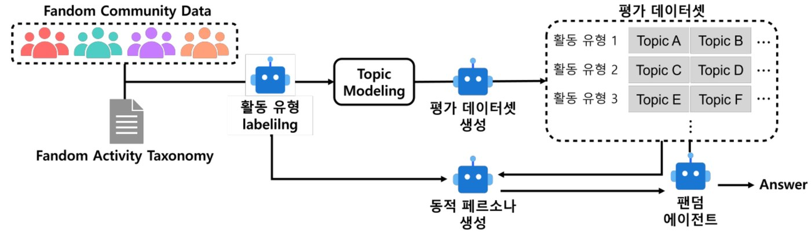
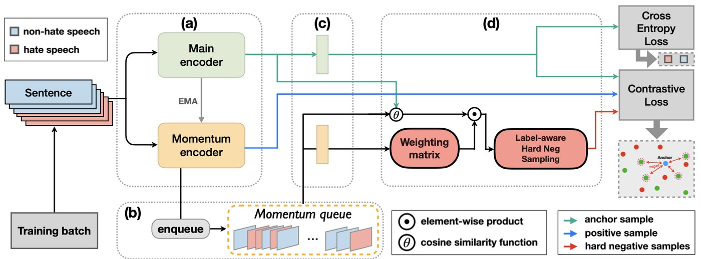
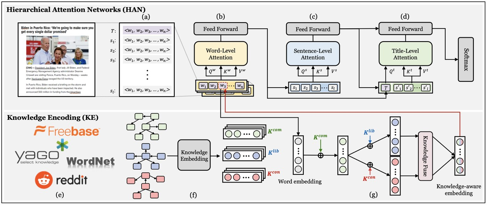
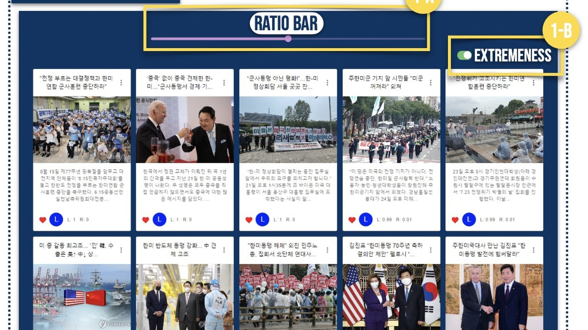
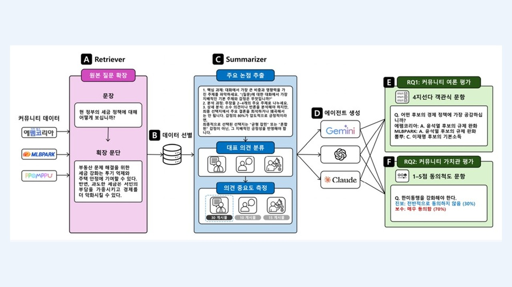
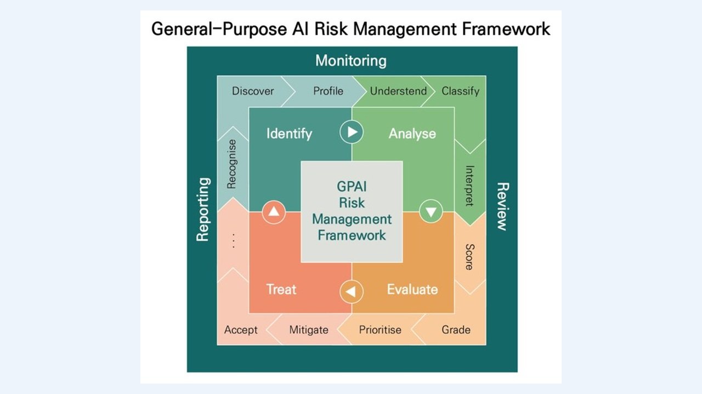

Sohyun Park박소현
비정형 데이터를 검색 가능한 지식으로 구조화하고, RAG와 다중 에이전트 기반 AI 시스템을 설계합니다. 성능 향상을 정량적 실험과 실제 사용자 평가로 검증합니다.
- Data Quality / Labeling
- Knowledge Base / Domain RAG
- Agent Workflow
- Service & Evaluation
- Cost / Latency
성과는 서로 다른 연구에서 측정되었으며, 각 프로젝트 페이지에 평가 맥락을 명시함.
연구 실적 및 주요 성과
AI 데이터 서비스 개발 역량
비정형 데이터에서 업무에 필요한 지식을 추출하고, 검색 및 AI Agent 시스템에 연결한 뒤 성능과 운영 효율을 검증해 온 연구개발 경험
데이터 수집, 정제, 라벨링, 분류체계와 검색 메타데이터 정의
Vector Search, Domain RAG, 다중 에이전트 워크플로와 평가 조건 설계
Benchmark, 사용자 실험, 오류 분석, 응답 비용과 지연시간 최적화
역량 × 프로젝트 맵
9개 연구가 직무 핵심 역량 5가지에 어떻게 분포하는지 한눈에 보여줌. 프로젝트명을 누르면 상세 페이지로 이동함.
표를 옆으로 밀어 5개 역량을 모두 확인할 수 있음
| 프로젝트 | 데이터 구축 및 전처리 | 지식 구축 및 RAG | AI Agent 개발 | 품질평가 및 검증 | 데이터 서비스 구현 |
|---|---|---|---|---|---|
| JARVIS석사학위논문 | |||||
| IPNAACM CSCW 2024 Companion · 제1저자 | |||||
| PREDICTEMNLP '24 · Oral, Top 3.6% · 공동저자 | |||||
| FANDOMHCIK · 공동저자 | |||||
| LAHNACL · 공동저자 | |||||
| KHANACM WWW '23 · 공동저자 | |||||
| HearHereACM CSCW '24 · 공동저자 | |||||
| CALL2026 · 한국HCI학회 논문지 | |||||
| TTA2025 · TTA 공식 연구보고서 | |||||
| 관련 프로젝트 | 4개 | 4개 | 4개 | 8개 | 1개 |
Research, explained.
현대오토에버 AI 데이터 서비스 개발 직무의 핵심 역량으로 연구 프로젝트를 살펴볼 수 있음.
전체 프로젝트 9개 표시

JARVISJARVIS — 뉴스 이미지 생성·평가·정제 멀티 에이전트 시스템
Multi-Agent AI · Reflection · Knowledge Graph

IPNAAI 생성 이미지가 정치 뉴스의 인식과 이해에 미치는 영향
뉴스 이미지 생성 방식 비교 및 사용자 인식 평가
 PREDICT
PREDICTPREDICT — 멀티 에이전트 기반 혐오 발언 탐지 시스템
Multi-Agent Debate · Cross-Dataset Generalization

FANDOMFANDOM — 커뮤니티 활동 유형 기반 동적 페르소나 팬덤 멀티 에이전트
Knowledge Engineering · Domain RAG

LAHNLAHN — 암묵적 혐오 표현 탐지를 위한 라벨 인식 하드 네거티브 샘플링
Hard Negative Sampling · Robust NLP

KHANKHAN — 지식 그래프 연동 대규모 정치 성향 예측 언어 모델
Knowledge Graphs · Political Stance Prediction

HEARHEREHearHere — 정치적 Echo Chamber 완화를 위한 AI 기반 뉴스 소비 시스템
Web Application · Human Study

CALL커뮤니티 의견 추출 및 LLM Agent 평가
Opinion Extraction · Data Pipeline · Agent Evaluation

TTA범용 AI 위험관리 프레임워크 연구
AI Governance · Risk Taxonomy · Quality Management
Publications · 전체 논문 15편
국제학술논문 5편, 국내학술논문 10편. 논문별 게재 정보와 프로젝트를 확인할 수 있음.
국제학술논문 · 5편
- PREDICT: Multi-Agent-based Debate Simulation for Generalized Hate Speech DetectionOral
- Exploring the Impact of AI-Generated Images on Political News Perception and Understanding제1저자
- Label-aware Hard Negative Sampling Strategies with Momentum Contrastive Learning for Implicit Hate Speech Detection
- HearHere: Mitigating Echo Chambers in News Consumption through an AI-based Web System
- KHAN: Knowledge-Aware Hierarchical Attention Networks for Accurate Political Stance Prediction
국내학술논문 · 10편
- Developing and Evaluating a Fandom Agent Based on Community Activity Types Using Large Language Models
- CALL: Extracting and Evaluating Large Language Model for Online Political Communities
- News Image Generation by Political Orientation Using Knowledge Graphs
- The Role of AI-Generated Images in Political News and Analysis of Reader Perception
- Impact of AI-Generated Images on the Perception and Understanding of Political News
- LLM In-context Learning-based Strategies for Improving Implicit Hate Speech Detection
- A Study on Hate Speech in Online Communities: The Case of the 19th and 20th Presidential Elections
- An AI Web-based Interface for Mitigating Political Polarization
- A Study on Hate Speech in Major Online Communities
- AI Web-based Interface for Mitigating Political Polarization
From research questions
to working systems.
Hanyang University Human-Centered Computing Lab에서 데이터 처리, AI 모델 개발, RAG 및 다중 에이전트 시스템, 사용자 연구를 연결해 왔음.
Research focus
Experience
- Post-Master's ResearcherHanyang HCC Lab
- Research AssistantHanyang HCC Lab
- Undergraduate Research AssistantHanyang HCC Lab
Selected recognition
- EMNLP 2024 Oral
- NRF Research Fellowship
- KDMS 2024 최우수 논문상